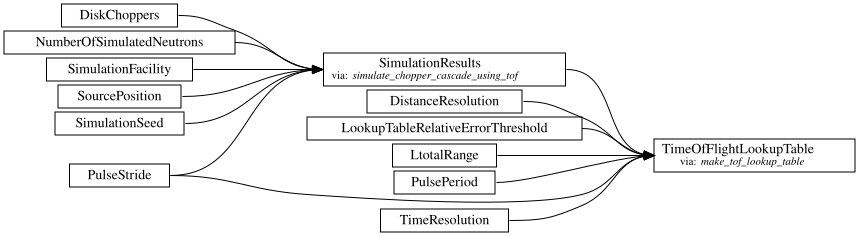
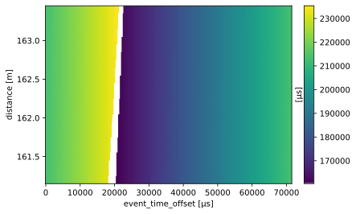

Create a time-of-flight lookup table for BIFROST#
This notebook shows how to create a time-of-flight lookup table for frame unwrapping at BIFROST.
[1]:
from ess.reduce import nexus
import sciline
import scipp as sc
import scippnexus as snx
from ess.reduce.nexus.types import RawChoppers, DiskChoppers
from ess.reduce.time_of_flight.lut import (
LtotalRange,
NumberOfSimulatedNeutrons,
SourcePosition,
TofLookupTableWorkflow,
)
from scippneutron.chopper import DiskChopper
from ess.bifrost import BifrostSimulationWorkflow
from ess.bifrost.data import simulated_elastic_incoherent_with_phonon
from ess.spectroscopy.types import *
Load and process beamline parameters#
First, load all required beamline parameters from an input NeXus file. We only need to know the geometry up to the sample which is the same for all banks, so choosing a single detector is enough.
[2]:
input_filename = simulated_elastic_incoherent_with_phonon()
with snx.File(input_filename) as f:
detector_names = list(f['entry/instrument'][snx.NXdetector])
Downloading file 'BIFROST_20240914T053723.h5' from 'https://public.esss.dk/groups/scipp/ess/bifrost/2/BIFROST_20240914T053723.h5' to '/home/runner/.cache/ess/bifrost/2'.
[3]:
bifrost_workflow = BifrostSimulationWorkflow(detector_names)
bifrost_workflow[Filename[SampleRun]] = input_filename
M = nexus.types.CalibratedMonitor[SampleRun, FrameMonitor3]
C = RawChoppers[SampleRun]
choppers, monitor = bifrost_workflow.compute((C, M)).values()
beamline = sciline.compute_mapped(bifrost_workflow, BeamlineWithSpectrometerCoords[SampleRun])[0]
Compute the required distance range to include the monitor and sample:
[4]:
l_monitor = sc.norm(monitor.coords['source_position'] - monitor.coords['position'])
l_min = l_monitor
l_max = beamline.coords['L1']
The choppers in the simulated file need to be processed before they can be used for computing a lookup table. The following works for the specific simulation but is not usable in general.
[5]:
def extract_chopper_plateau(chopper):
processed = chopper.copy()
# These are constant in the simulated data.
processed['rotation_speed'] = processed['rotation_speed'].data.mean()
processed['phase'] = processed['phase'].data.mean()
# Guessing here as this is not stored in the file.
processed['beam_position'] = sc.scalar(0.0, unit='deg')
return DiskChopper.from_nexus(processed)
disk_choppers = choppers.apply(extract_chopper_plateau)
Compute the lookup table#
Construct a lookup table workflow:
[6]:
workflow = TofLookupTableWorkflow()
workflow[DiskChoppers] = disk_choppers
workflow[LtotalRange] = (l_min, l_max)
workflow[SourcePosition] = beamline.coords['source_position']
# Increase this number for more reliable results:
workflow[NumberOfSimulatedNeutrons] = 200_000
[7]:
workflow.visualize(TimeOfFlightLookupTable, graph_attr={"rankdir": "LR"})
[7]:

Compute a lookup table:
[8]:
table = workflow.compute(TimeOfFlightLookupTable)
table
[8]:
scipp.DataArray (45.06 KB)
- distance: 9
- event_time_offset: 287
- distance(distance)float64m161.200, 161.300, ..., 161.900, 162.000
Values:
array([161.19961458, 161.29961458, 161.39961458, 161.49961458, 161.59961458, 161.69961458, 161.79961458, 161.89961458, 161.99961458]) - distance_resolution()float64m0.09999999999999432
Values:
array(0.1) - error_threshold()float64𝟙0.1
Values:
array(0.1) - event_time_offset(event_time_offset)float64µs0.0, 249.750, ..., 7.118e+04, 7.143e+04
Values:
array([ 0. , 249.75024975, 499.5004995 , 749.25074925, 999.000999 , 1248.75124875, 1498.5014985 , 1748.25174825, 1998.001998 , 2247.75224775, 2497.5024975 , 2747.25274725, 2997.002997 , 3246.75324675, 3496.5034965 , 3746.25374625, 3996.003996 , 4245.75424575, 4495.5044955 , 4745.25474525, 4995.004995 , 5244.75524476, 5494.50549451, 5744.25574426, 5994.00599401, 6243.75624376, 6493.50649351, 6743.25674326, 6993.00699301, 7242.75724276, 7492.50749251, 7742.25774226, 7992.00799201, 8241.75824176, 8491.50849151, 8741.25874126, 8991.00899101, 9240.75924076, 9490.50949051, 9740.25974026, 9990.00999001, 10239.76023976, 10489.51048951, 10739.26073926, 10989.01098901, 11238.76123876, 11488.51148851, 11738.26173826, 11988.01198801, 12237.76223776, 12487.51248751, 12737.26273726, 12987.01298701, 13236.76323676, 13486.51348651, 13736.26373626, 13986.01398601, 14235.76423576, 14485.51448551, 14735.26473526, 14985.01498501, 15234.76523477, 15484.51548452, 15734.26573427, 15984.01598402, 16233.76623377, 16483.51648352, 16733.26673327, 16983.01698302, 17232.76723277, 17482.51748252, 17732.26773227, 17982.01798202, 18231.76823177, 18481.51848152, 18731.26873127, 18981.01898102, 19230.76923077, 19480.51948052, 19730.26973027, 19980.01998002, 20229.77022977, 20479.52047952, 20729.27072927, 20979.02097902, 21228.77122877, 21478.52147852, 21728.27172827, 21978.02197802, 22227.77222777, 22477.52247752, 22727.27272727, 22977.02297702, 23226.77322677, 23476.52347652, 23726.27372627, 23976.02397602, 24225.77422577, 24475.52447552, 24725.27472527, 24975.02497502, 25224.77522478, 25474.52547453, 25724.27572428, 25974.02597403, 26223.77622378, 26473.52647353, 26723.27672328, 26973.02697303, 27222.77722278, 27472.52747253, 27722.27772228, 27972.02797203, 28221.77822178, 28471.52847153, 28721.27872128, 28971.02897103, 29220.77922078, 29470.52947053, 29720.27972028, 29970.02997003, 30219.78021978, 30469.53046953, 30719.28071928, 30969.03096903, 31218.78121878, 31468.53146853, 31718.28171828, 31968.03196803, 32217.78221778, 32467.53246753, 32717.28271728, 32967.03296703, 33216.78321678, 33466.53346653, 33716.28371628, 33966.03396603, 34215.78421578, 34465.53446553, 34715.28471528, 34965.03496503, 35214.78521479, 35464.53546454, 35714.28571429, 35964.03596404, 36213.78621379, 36463.53646354, 36713.28671329, 36963.03696304, 37212.78721279, 37462.53746254, 37712.28771229, 37962.03796204, 38211.78821179, 38461.53846154, 38711.28871129, 38961.03896104, 39210.78921079, 39460.53946054, 39710.28971029, 39960.03996004, 40209.79020979, 40459.54045954, 40709.29070929, 40959.04095904, 41208.79120879, 41458.54145854, 41708.29170829, 41958.04195804, 42207.79220779, 42457.54245754, 42707.29270729, 42957.04295704, 43206.79320679, 43456.54345654, 43706.29370629, 43956.04395604, 44205.79420579, 44455.54445554, 44705.29470529, 44955.04495504, 45204.7952048 , 45454.54545455, 45704.2957043 , 45954.04595405, 46203.7962038 , 46453.54645355, 46703.2967033 , 46953.04695305, 47202.7972028 , 47452.54745255, 47702.2977023 , 47952.04795205, 48201.7982018 , 48451.54845155, 48701.2987013 , 48951.04895105, 49200.7992008 , 49450.54945055, 49700.2997003 , 49950.04995005, 50199.8001998 , 50449.55044955, 50699.3006993 , 50949.05094905, 51198.8011988 , 51448.55144855, 51698.3016983 , 51948.05194805, 52197.8021978 , 52447.55244755, 52697.3026973 , 52947.05294705, 53196.8031968 , 53446.55344655, 53696.3036963 , 53946.05394605, 54195.8041958 , 54445.55444555, 54695.3046953 , 54945.05494505, 55194.80519481, 55444.55544456, 55694.30569431, 55944.05594406, 56193.80619381, 56443.55644356, 56693.30669331, 56943.05694306, 57192.80719281, 57442.55744256, 57692.30769231, 57942.05794206, 58191.80819181, 58441.55844156, 58691.30869131, 58941.05894106, 59190.80919081, 59440.55944056, 59690.30969031, 59940.05994006, 60189.81018981, 60439.56043956, 60689.31068931, 60939.06093906, 61188.81118881, 61438.56143856, 61688.31168831, 61938.06193806, 62187.81218781, 62437.56243756, 62687.31268731, 62937.06293706, 63186.81318681, 63436.56343656, 63686.31368631, 63936.06393606, 64185.81418581, 64435.56443556, 64685.31468531, 64935.06493506, 65184.81518482, 65434.56543457, 65684.31568432, 65934.06593407, 66183.81618382, 66433.56643357, 66683.31668332, 66933.06693307, 67182.81718282, 67432.56743257, 67682.31768232, 67932.06793207, 68181.81818182, 68431.56843157, 68681.31868132, 68931.06893107, 69180.81918082, 69430.56943057, 69680.31968032, 69930.06993007, 70179.82017982, 70429.57042957, 70679.32067932, 70929.07092907, 71178.82117882, 71428.57142857]) - pulse_period()float64µs71428.57142857142
Values:
array(71428.57142857) - pulse_stride()int641
Values:
array(1) - time_resolution()float64µs249.7502497502497
Values:
array(249.75024975)
- (distance, event_time_offset)float64µs2.134e+05, 2.137e+05, ..., 2.131e+05, 2.133e+05σ = 47.411, 17.248, ..., 113.975, 81.995
Values:
array([[213374.30796908, 213747.47181885, 213939.584904 , ..., 212754.66241435, 213103.83278957, 213374.30796908], [213405.0395729 , 213547.03743541, 213927.69546725, ..., 212838.444297 , 212959.80576007, 213405.0395729 ], [213368.23023659, 213639.04099405, 214014.08517967, ..., 212862.48124772, 213018.62664648, 213368.23023659], ..., [213390.02273361, 213546.55511073, 213857.19716993, ..., 212789.72765561, 212996.7508672 , 213390.02273361], [213300.05068602, 213566.5988583 , 213746.70588754, ..., 212769.04863494, 213043.85242764, 213300.05068602], [213260.03548802, 213653.79347655, 213810.51934286, ..., 212726.25232976, 213052.75637567, 213260.03548802]], shape=(9, 287))
Variances (σ²):
array([[ 2247.79890257, 297.48115572, 1432.68787265, ..., 1360.91816181, 28023.534969 , 2247.79890257], [ 7046.38848776, 458.52879233, 7027.99370401, ..., 8654.0578452 , 5099.30085154, 7046.38848776], [28093.11558037, 2253.38004078, 441.30301046, ..., 198.31155422, 1364.29723293, 28093.11558037], ..., [ 199.29573151, 1371.06794459, 24361.4440222 , ..., 12958.32470948, 6706.56088907, 199.29573151], [27396.03602573, 3990.39133932, 3936.13262595, ..., 2597.44138129, 6452.634409 , 27396.03602573], [ 6723.15105434, 199.78873369, 1374.45958514, ..., 3488.5912465 , 12990.37999865, 6723.15105434]], shape=(9, 287))
[9]:
table.plot()
[9]:

Save to file#
[10]:
table.save_hdf5('BIFROST-simulation-tof-lookup-table.h5')